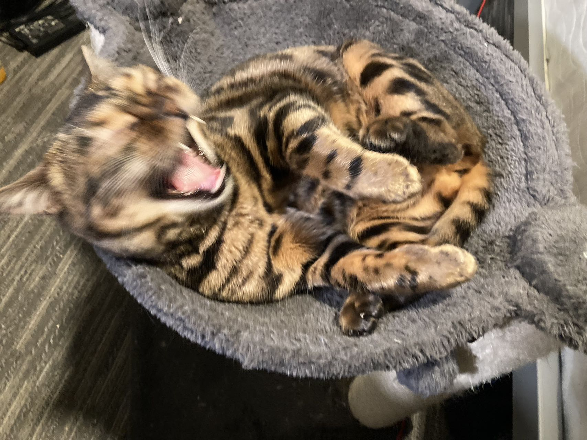

flowchart LR
A[Hard edge] --> B(Round edge)
B --> C{Decision}
C --> D[Result one]
C --> E[Result two]
simple_quarto_website
This is a Quarto website.
To learn more about Quarto websites visit https://quarto.org/docs/websites.
0.1 Headings
1 H1
1.1 H2
1.1.1 H3
2 Two-Column Summary
Left column content
Right column content
3 A Markdown Table
| Artifact | File/Path | Notes |
|---|---|---|
| Example Image | images/ruirui.jpg |
Final layout example |
| Placeholder Plot | images/luna.png |
Surface illustration |
| Video Snippet | images/mov_bbb.mp4 |
Embedded below（HTML5 video） |
4 Math
Inline-math：\(f(x)=\sigma(w^\top x+b)\)。
non inline-math：
\[ \left\lVert \nabla I \right\rVert \;=\; \sqrt{\left(\frac{\partial I}{\partial x}\right)^2 + \left(\frac{\partial I}{\partial y}\right)^2} \]
5 Footnotes
Here is a footnote reference.1
6 Quote
“To be, or not to be: that is the question”
7 Pics & video


8 Mermaid Diagram
9 Citation
This is a test fro citation. (Patashnik 1984)
References
Patashnik, Oren. 1984. “BIBTEX 101.” TUGboat 15: 269–73.
Footnotes
Here is the footnote.↩︎